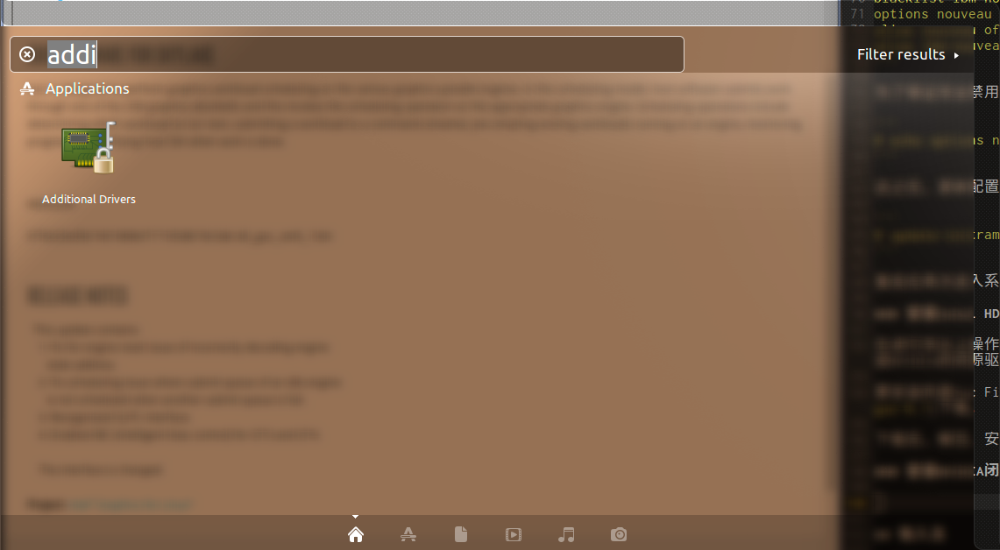
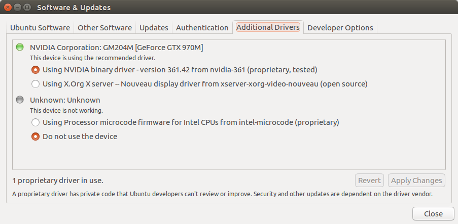
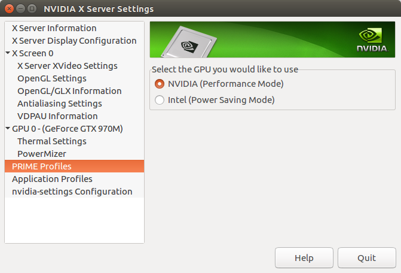

Ubuntu 16.04 安装小记
前言
Ubuntu大概是最容易安装的一个Linux发行版，因此本文并不是普通意义上的安装教程或新品尝鲜的感受。
本文针对的读者，是那些想在有双显卡（Intel和NVIDIA）的笔记本上安装Ubuntu 16.04的人，以及对我的电脑有浓厚好奇心的观众。
我的电脑
因为兴趣爱好和使用习惯上的偏好，我在去年年底购入了一台未来人游戏本，打算由此替换掉使用了两年多的Macbook Air，并彻底抛弃Mac平台。
这台未来人的主要配置如下：
- CPU: Intel i7 6700HQ
- GPU:
- Intel HD 530
- NVIDIA GTX 970M
- Network Controller: Intel Corporation Wireless 3165
这些硬件配置意味着对系统的特殊要求：
- 内核版本在4.2以上才能保证无线网卡的正常工作。
- 内核版本在4.4以上才能完全支持SkyLake系列CPU。
- 需要安装闭源驱动才能让独立显卡发挥出最高性能，同时支持双显卡切换。
为什么选择Ubuntu
从去年购入电脑之后，因为硬件太新的原因，我不断尝试安装各种不同的发行版，但无一成功，这其中包括：
- Arch Linux: 我在这台电脑上安装Arch的时候，Kernel 4.4 还没发布，同时由于电脑上其他硬件以及我不信奉Arch哲学的原因，我没有对Arch做更多的尝试。
- Gentoo Linux: 我是Gentoo的死忠，这次尝试过Gentoo之后发现，双显卡的设置令我捉摸不透，因此Gentoo暂时搁置。
- Redhat系：由于Nouveau的原因，导致安装程序无法正常启动，放弃。
- Debian：同上。
- Ubuntu：尝试过各种版本号，其中大部分会因Nouveau的问题而挂掉，15.10 和16.04 可以安装上，安装完成后需要手动配置其他东西（内核版本、内核模块、闭源驱动等）；最终我选择了16.04。
安装过程
Ubuntu 16.04 的安装过程一如既往地“无痛”。只是，在我这台电脑上安装完成后，无法直接进入系统（因为会死机）。
后续处理
因为Ubuntu 16.04 提供了4.4.0的内核，所以不需要再进行任何方式的内核升级，但因为要处理显卡驱动，所以还要简单处理一下内核模块。
显卡驱动
该发行版依旧内置了Nouveau 开源驱动，这是导致频繁死机的直接原因。接下来要做的三件事情是：
- 禁用Nouveau 内核模块
- 安装Intel HD 530 驱动（二选一）
- 安装NVIDIA 闭源驱动（二选一）
禁用Nouveau 内核模块
首先添加一个blacklist:
1 | vi /etc/modprobe.d/blacklist-nouveau.conf |
在这个文件中写入以下内容：
1 | blacklist nouveau |
为了保证完全禁用掉，还要在内核中直接禁用Nouveau:
1 | echo options nouveau modeset=0 | sudo tee -a /etc/modprobe.d/nouveau-kms.conf |
这之后，更新配置试生效：
1 | update-initramfs -u |
重启后再次进入系统，就能避免登录之后直接卡死的情况。
安装Intel HD 530 驱动
在进行完以上操作后，可以登录进系统，但卡死的情况仍然频繁发生。解决方案要么是安装Intel的驱动，要么是安装NVIDIA的闭源驱动，可以根据自己的需求来决定。
要安装的是Guc Firmware for SkyLake，可以来这里下载。
下载后，解压、安装、重启，电脑即可正常运行。如果不想安装NVIDIA闭源驱动的话，就可以到此结束了。
然而在我的电脑上，只安装Intel驱动会遗留一个Bug：无法支持外接显示器。
安装NVIDIA闭源驱动
网上有非常多种安装N卡驱动的方法，根据我的实验，只有最简单的是最靠谱的；用其他方法安装会出现各种意外。
首先打开Ubuntu 自带的Additional Drivers:

在Additional Drivers标签可以看到，系统已经识别出具体的N卡型号，并给出了闭源驱动的版本号：

在Terminal 中输入：
1 | sudo apt-get install nvidia-[version] # version为具体的版本号，如图所示为'361' |
安装完毕后，再在Additional Drivers里选择该驱动，重启即可正常使用。

可以看到，在NVIDIA Settings里，可以进行双显卡切换，不过切换后需要注销并重新登录才能应用设置。
这里有个尚未解决的Bug：在安装了N卡闭源驱动之后，如果在PRIME中选择应用Intel显卡，会出现无法正常关机的情况。因此一旦安装了N卡驱动，就一直使用N卡驱动吧。
输入法
我这里安装的是搜狗拼音，分三步：
- 从官网上下载了deb并安装时，会遇到依赖缺失的情况，用
apt-get install -f解决。 - 进入系统设置的语言设置时，会提示语言未安装完全，此处要根据提示进行安装。
- 安装之后，在语言设置里设置使用Fcitx，在Fcitx设置的Input Method选显卡中记得添加Sogou Pinyin，这时搜狗拼音输入法才会在顶部显示出来。
结束
关于安装，到此告一段落。
然而经理了这么长时间的折腾，我对此还是有些感慨的：
- 不要购买太新的电脑用来跑Linux。
- 对于驱动软件，我认为闭源驱动比开源驱动更值得信赖。
- 作为一名Linux用户，应该定期查阅Kernel Mailing List。